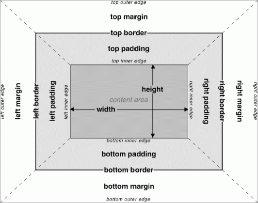

Il box model
Il box model ` il modello il riferimento utilizzato del browser per determinare la spezialit` di un elemento, in quanto le dimensioni dell'elemento ed il suo scostamento rispetto agli altri elementi che lo seguono, precedono o affiancano.
Width
Larghezza di un elemento, occupata dai contenuti e all'interno della quale se settato ` visibile il background.
Height
Altezza di un elemento, occupata dai contenuti e all'interno della quale se settato ` visibile il background.
#box1 {width:500px; height:500px; background-color:blue;}
Padding
Spaziatura che va dall'area del contenuto al bordo di un elemento,nella quale se settaro ` visibile il background. Il padding può essere determinato sui quattro lati tramite:
- padding-top
- padding-right
- padding-bottom
- padding-left
Oppure tramite la forma abbreviata con la sola parola padding:
padding:10px; è uguale a ----> padding-top:10px; padding-right:10px, padding-bottom:10px; padding-left:10px;
padding:10px 20px; è uguale a ---> padding:top, bottom, right, left;
padding: 10px 5px 7px 10px; è uguale a ----> padding:top, right, bottom,left;
padding 10px 5px 9px; è uguale a ---> padding:top,right,bottom,left;
Boder
Bordo che circonda l'elemento, più essere definito su 4 lati diversi, per ogni lato più essere specificato in questo modo:
border-top-width:1px; spessore del bordo
border-top-style:solid; stile del bordo (es.: solid,dashed,dotted...)
boder-top-color: red; colore del bordo (espresso tramite valore testuale, rgba o hex)
Forma abbreviata per il singolo lato
boder-top:1px solid red;
Forma abbreviata per 4 lati
boder:1px solid red;
Margin
Spazio trasparente esterno all'elemento, che indica lo scostamento di esso dagli altri elementi che lo seguono,precedono o affiancano. Non è visibile nessun background all'interno del margin. il margin più essere impostato sui quattro lati attraverso:
- margin-top
- margin-right
- margin-bottom
- margin-left
oppure tramite la modalità abbreviata:
margin:10px ----> margin-top:10px; margin-right:10px; margin-bottom:10px; margin-left:10px;
margin:10px 20px; ----> margin-top:10px; margin-bottom:10px; margin-left:20px; margin-right:20px;
margin:10px 5px 12px 21px; ----> margin-top:10px; margin-right:5px; margin-bottom:12px; margin-left:21px;
margin:10px 5px 6px; -----> margin-top:10px; margin-right:5px; margin-bottom:6px; margin-left:5px;
margin: 0 auto
Indica margin-top e margin-bottom 0px e margin-left e margin-right auto, dove auto serve per centrare un elemento che ha la proprità width dichiarata e impostata su un valore.
La proprità del Box-sizing
Ovvero la proprietà che determina come vengono calcolate la larghezza / altezza effettiva di ingombro all'interno del viewport, degli elementi
box-sizing:content-box;
è il valore di default, significa che Width/height determinano la larghezza/altezza destinata ai contenuti, alla quale si aggiungerano padding e border per determinare la larghezza/altezza definitiva dell'elemento su viewport.
La larghezza/altezza dell'elemento sul viewport data da:
width + paddin(left/height) + boder(left/height)
height + padding (top+bottom) + boder(top/bottom)
box-sizing:border-box;
Semplica notevolmente i calcoli width la larghezza totale ed height, l'altezza totale, alla quale vengono
la larghezza/altezza dell'elemento sul viewport data da:
width - padding (left/right) - border(left/right)
height - padding (top/bottom) - border (top/bottom)